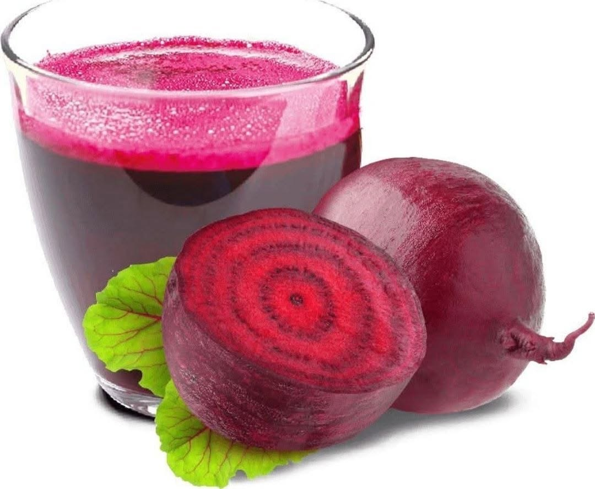
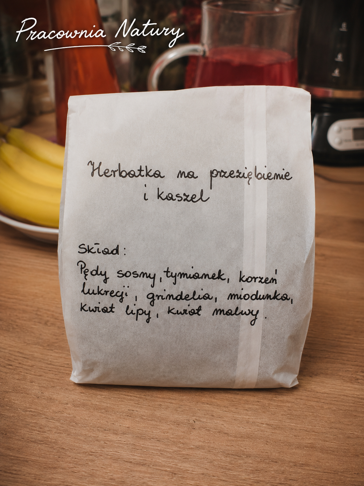
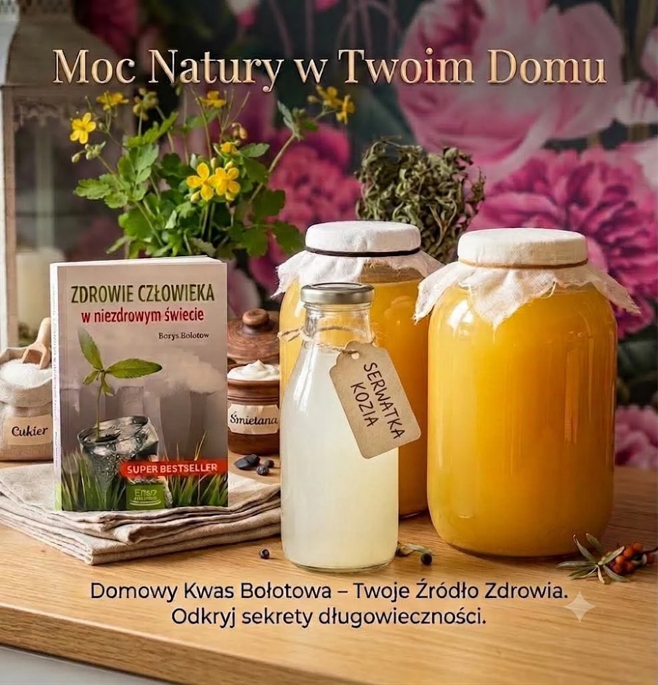
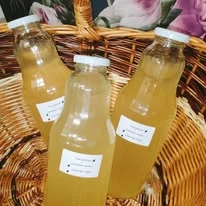
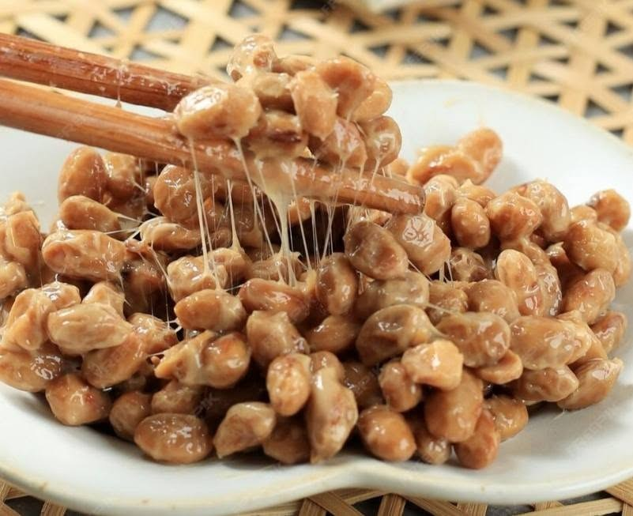

Pracownia Natury EKO
NaturalnieRęcznie tworzone produkty inspirowane naturą
Z natury. Ręcznie. Z sercem.
Każdy wyrób powstaje w niewielkich partiach, z uważnością, cierpliwością i szacunkiem dla tradycyjnych receptur.
Naturalne składnikiStarannie wybierane rośliny, korzenie i surowce.
Ręczna pracaKażdy wyrób przygotowywany jest w małych partiach.
Tradycyjne recepturyInspiracja zielarstwem, sezonowością i doświadczeniem.
Szacunek dla naturyBez pośpiechu i bez produkcji masowej.
Nasze wyroby
Wybierz kategorię
Kliknij kategorię, aby zobaczyć konkretne wyroby oraz możliwość kontaktu lub przejścia do OLX.

Herbatki i mieszanki ziołowe
Herbata na przeziębienie i kaszel

Kosmetyki naturalne
Mazidła, pasta, dezodorant i okłady

Fermenty i zakwasy
Enzymy Bołotowa, zakwas buraczany i natto

Nalewki i ekstrakty
Wyroby sezonowe i Zioła Szwedzkie

Zioła i kompozycje
Suszone mieszanki ziół

Syropy i przetwory sezonowe
Oferta w przygotowaniu
Nowości z Pracowni
Aktualna oferta
Wyroby pojawiają się w ograniczonych partiach. Dostępność najlepiej potwierdzić bezpośrednio.

nowość
Herbata na przeziębienie i kaszel
Kompozycja siedmiu surowców zielarskich.
Poznaj Pracownię
Prawdziwa osoba. Prawdziwa praca.
Pracownia Natury EKO powstała z pasji do roślin, tradycyjnego zielarstwa i pracy wykonywanej własnymi rękami. Każda partia otrzymuje tyle czasu i uwagi, ile naprawdę potrzebuje.
Nie produkujemy masowo. Sezonowość, dostępność składników i naturalny rytm przygotowania są częścią charakteru każdego wyrobu.
Galeria
Z życia Pracowni
Poznaj codzienność Pracowni Natury EKO — od zbioru roślin, przez przygotowanie receptur, aż po gotowe wyroby.

Początek maceracji wrotyczu
Świeżo zebrany wrotycz trafia do słoja zaraz po zbiorze.

Maceracja wrotyczu i glistnika
Autentyczny etap przygotowania surowca w pracowni.

Kolejny etap maceracji
Rośliny pozostają w maceracie przez czas potrzebny recepturze.

Okłady z żywokostu
Mała partia przygotowana ze świeżego żywokostu, liścia laurowego, DMSO i witaminy E.

Ręcznie pakowane herbatki
Mieszanki ziołowe są komponowane i pakowane w niewielkich partiach.

Gotowe wyroby
Ostatni etap: rozlew, pakowanie i przygotowanie do odbioru.
Atlas roślin i składników
 Aloes
Aloes Wrotycz
Wrotycz Zielone orzechy
Zielone orzechy Mniszek lekarski — ziele
Mniszek lekarski — ziele Mniszek lekarski — korzeń
Mniszek lekarski — korzeń Mięta
Mięta Czarny bez
Czarny bez Rumianek
Rumianek LawendaNasiona dyni i zioła
LawendaNasiona dyni i zioła Imbir
Imbir Czosnek
Czosnek Buraki
Buraki Ostropest
Ostropest Rozmaryn
Rozmaryn Nagietek
NagietekKontakt
Zapytaj o wyrób
Zamówienia mogą być składane bezpośrednio. Linki do OLX podłączymy po otrzymaniu adresów konkretnych ofert.
Wiadomość bezpośrednia
Dodaj tutaj numer telefonu, e-mail lub profil społecznościowy.
Uzupełnimy prawdziwe dane kontaktowe i linki przed publikacją wersji końcowej.